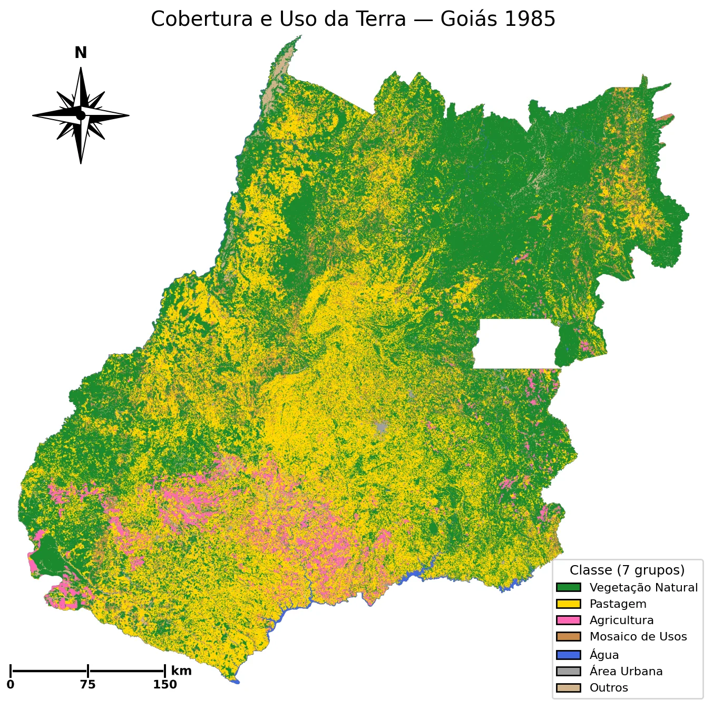
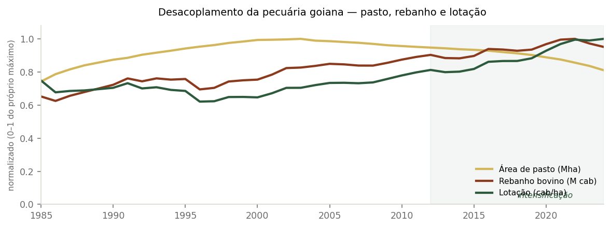
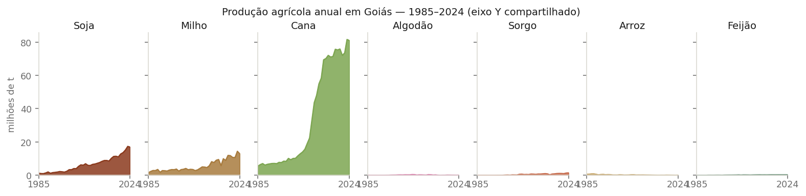
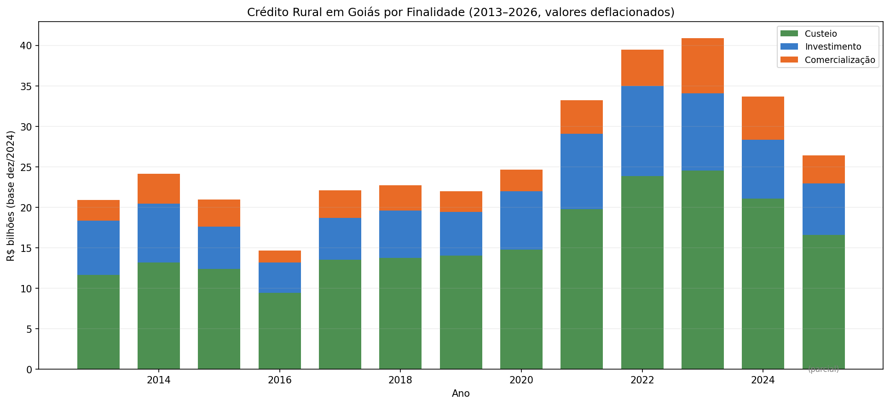
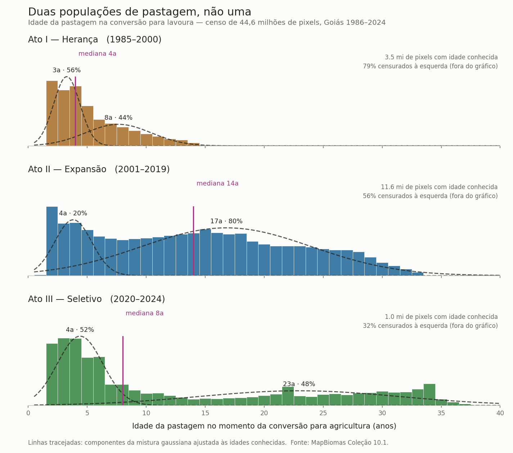
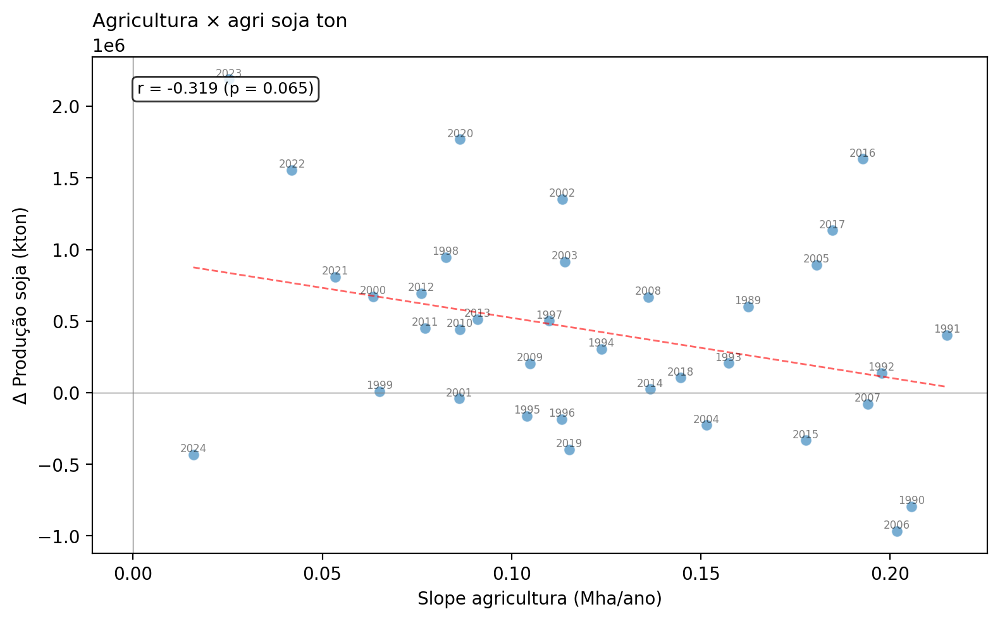
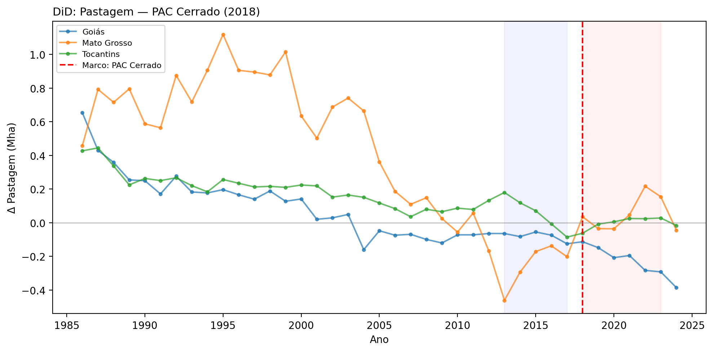

Faixas = atos · pontos = referências · clique para navegar
1985
2024
Dissertação CIAMB-UFG · 1985-2024
Buscando histórias em 40 anos de dados
Cada pixel representa uma área de 30 por 30 metros no terreno. São mais de 340 milhões deles cobrindo
Goiás, ano a ano, por quatro décadas. Nesta exploração, usamos essa
parede de dados — 1,5 bilhão de classificações pixel-a-pixel do
MapBiomas — para procurar as marcas que leis, mercados e decisões
políticas deixaram no território. O que encontramos se organiza em
três atos. Role para ver o primeiro.
Comece pelo mapa de 1985 ↓
Como ler esta linha do tempo
Os 40 anos da série se organizam em dois níveis. No agregado, a série se divide em
três atos — períodos macro de 5 a 19 anos, definidos por triangulação
estatística e marcados pelas faixas coloridas da régua acima.
Dentro dos atos, referências institucionais (pinos pretos na régua)
marcam eventos que contextualizam as transições observadas.
Os três atos
I · Pastagem como herança · 1985–2000
II · Expansão e intensificação · 2001–2019
III · Conversão seletiva · 2020–2024
Como os atos foram definidos?
As fronteiras ~2001 e ~2020 não foram escolhidas — foram detectadas por
triangulação de quatro métodos estatísticos independentes:
Método
~2001
~2020
sup-F multivariado (primário)
F = 62,2 ✓
F = 21,5 ✓
STARS (sensibilidade)
2004/06 ✓
—
KL/TV de transições
pico 2003 ✓
pico 2018–20 ✓
Convergência (detecção): 3/3 para ~2001, 2/3 para ~2020.
Validação global — Intensity Analysis (Aldwaik & Pontius):
Kruskal-Wallis H = 22,6, p < 0,001 — os 3 Atos diferem
significativamente em taxa de mudança. Este resultado é um teste único
que compara os 3 períodos simultaneamente, não detecções separadas por fronteira.
A candidata a 4º período (~2005/06) foi rejeitada: taxa total NS (p = 0,060),
embora composicionalmente diferente (perda de veg. natural 5× mais intensa, p = 0,0008).
Role para avançar no tempo — cada parágrafo lateral é um ano.
Clique em uma faixa ou em um pino da régua para saltar.
O mapa, os cards laterais e a sparkline inferior sincronizam com o ano em foco.
Os cards laterais têm acordeões para agricultura, pecuária e socioeconômico.

Veg. naturalPastagemAgriculturaÁguaUrbanoOutros
1985
Fonte: MapBiomas Coleção 10.1 · pixel-a-pixel (30 m)
I. Pastagem como herança (1985–2000)
O ponto de partida não é uma paisagem intocada, mas uma fronteira que já havia se movido.
O fim do regime militar e a inflação descontrolada dos anos 1980 marcam o início da nossa análise.
O mapa de 1985 exibe o legado claro da década anterior. Programas como o POLOCENTRO e o PRODECER
abriram cerca de um terço do estado para a pecuária extensiva. Sem estabilidade econômica,
qualquer plano de agricultura de longo prazo era impossível.
A pastagem domina o centro-sul do estado com tons dourados. O cerrado sobrevivente resiste no norte
e nordeste, na região do Vão do Paranã, pintado de verde escuro. A agricultura aparece de forma tímida,
em manchas rosas isoladas no sudoeste.
II. Expansão e intensificação (2001–2019)
A soja consolida seu espaço no sudoeste com a estabilização econômica e a isenção de impostos.
O Plano Real em 1994 permitiu calcular o futuro econômico, algo que nenhuma política agrícola
conseguiria sozinha. Em 1996, a Lei Kandir retirou o ICMS das exportações de commodities,
beneficiando diretamente a soja. Essa combinação de fatores atraiu forte capital privado.
O sudoeste, especialmente os municípios de Rio Verde, Jataí e Mineiros, começa a se pintar de rosa
com a lavoura avançando sobre as antigas pastagens. Embora o pasto ainda domine o estado no agregado,
o novo polo do agronegócio goiano se consolida aqui.
III. Conversão seletiva (2020–2024)
O ritmo de perda da vegetação natural diminui, e a pastagem começa a recuar no estado.
A partir de 2020, o comportamento histórico muda. A vegetação natural tem uma leve recuperação
pela primeira vez na série histórica, enquanto as pastagens encolhem e a área agrícola se estabiliza.
Essa reorganização do uso da terra coincide com o avanço do Cadastro Ambiental Rural (CAR), pressões
da cadeia de suprimentos e acordos ambientais.
O verde escuro resiste no Paranã e no Vão do Paranã, e a mancha rosa da agricultura se estabiliza
na região oeste. Embora o estoque de vegetação natural tenha caído para 34,9% em 2024, encostando no
limite legal do Cerrado, a curva mostra os primeiros sinais reais de estabilização e recuperação em
quase quarenta anos.
Depois dos mapas: saldo, processos e evidência
A narrativa cobriu o tempo ano a ano e ato a ato. Esta seção muda de escala:
primeiro mostra o saldo de 40 anos, os fluxos entre classes e o painel completo
de variáveis — e o que esses números revelam sobre os processos que moveram
Goiás. Depois abre o capô: quais métricas medem o tempo, quais camadas de
evidência sustentam cada afirmação e o que esta análise ainda não consegue
responder.
1 · O que mudou em 40 anos
Quatro números enquadram a transformação que os três atos descreveram
em detalhe. Eles vêm direto do painel agregado UF (MapBiomas Coleção
10.1 e IBGE/PPM) e podem ser conferidos na vitrine de § 3.
−5,8 Mha
Vegetação natural perdida · 1985→2024
17,65 → 11,88 Mha (51,9% → 34,9% do território). A 15 pontos do limite legal de Reserva Legal no Cerrado (20%).
×4,8
Crescimento da agricultura
1,17 → 5,58 Mha. A soja sozinha cresce ×12 em área (0,37 → 4,50 Mha) e ×13 em produção (1,3 → 17,0 Mt).
+1,0 Mha
Pastagem · saldo líquido enganoso
10,98 → 11,99 Mha. Mas a trajetória é em U invertido: cresce até 2003 (pico ~14,8 Mha) e depois recua. O saldo agregado esconde o ciclo.
×1,35
Lotação bovina por hectare
1,01 → 1,36 UA/ha. Rebanho cresce 46% (15,9 → 23,2 M cab) enquanto a área de pasto cresce só 9% — a pecuária se intensifica.
2 · Para onde foram os hectares
O saldo de § 1 é líquido: diz quanto cada classe ganhou ou perdeu,
mas esconde de onde vieram e para onde foram esses
hectares. O diagrama abaixo cruza o uso de cada pixel em 1985 com o
uso do mesmo pixel em 2024 e abre os fluxos por trás dos saldos.
Carregando diagrama…
Diagrama de Sankey · cruzamento pixel-a-pixel 1985 ↔ 2024 (30 m).
Larguras proporcionais à área em milhões de hectares. Fonte: MapBiomas Coleção 10.1 via GEE.
4,11 Mha
Veg. natural → Pastagem
O maior fluxo da série. Desmatamento histórico para pecuária extensiva — boa parte concentrada nos anos 1980–1990.
2,73 Mha
Pastagem → Agricultura
A maior conversão entre classes manejadas. É o que permite a expansão da lavoura sem desmatar diretamente.
1,29 Mha
Veg. natural → Agricultura (direta)
Desmatamento direto para lavoura. Menor que via pasto, mas existe — e ganha peso no nordeste após 2010.
Matriz 6×6 completa · 1985 → 2024 (Mha)
Origem ↓ / Destino →
Veg. natural
Pastagem
Agricultura
Água
Urbano
Outros
Veg. natural
10,35
4,11
1,29
0,18
0,04
0,04
Pastagem
0,49
6,03
2,73
0,04
0,08
0,01
Agricultura
0,00
0,03
1,07
0,00
0,00
0,00
Água
0,05
0,01
0,00
0,19
0,00
0,02
Urbano
0,00
0,00
0,00
0,00
0,07
0,00
Outros
0,09
0,11
0,08
0,01
0,01
0,57
Diagonal (em itálico): pixels que permaneceram na mesma classe. Off-diagonal: transições.
Leitura: dos 17,65 Mha de vegetação natural em 1985, 10,35 Mha permaneciam em 2024 — os
~7,3 Mha restantes foram convertidos, principalmente para pastagem (4,11) e agricultura (1,29).
Fonte: MapBiomas Coleção 10.1 (Pipeline #12).
3 · O painel e o que ele revela
A dissertação consolidou um painel municipal (246 municípios × 40 anos
× ~70 variáveis), reunindo MapBiomas, IBGE/SIDRA-PAM/PPM, IPEA, BACEN
e outras fontes. Os agregados municipais foram confrontados com os totais
estaduais do IBGE/SIDRA e checagens internas entre fontes, sem anomalias
graves — cada série pode ser rastreada até a fonte original. A grade abaixo
mostra o que está disponível; as subseções seguintes mostram
o que esses números revelam. A camada inferencial completa
está em § 7.
Carregando vitrine do painel…
Todas as séries são para o estado de Goiás (agregação UF). O painel
municipal completo (246 munis × ~70 vars) está documentado nos pipelines
#1–#26 da dissertação.
3.1 · A pecuária se desacoplou da área de pasto
A partir do início dos anos 2010, a área de pasto recua enquanto o
rebanho continua crescendo. O resultado é uma lotação que
sobe — mais cabeças por hectare. É uma mudança de modelo
produtivo: pecuária de área dá lugar a pecuária de manejo.

Séries normalizadas (0–1 do próprio máximo) para comparar a forma da curva. Fonte: MapBiomas (área de pasto), IBGE/PPM (rebanho bovino).Lotação bovina por ato · valores e leitura inferencial
Ato I · 1985 → 20001,01 → 0,98 UA/ha
Ato II · 2001 → 20190,98 → 1,17 UA/ha
Ato III · 2020 → 20241,17 → 1,36 UA/ha
O salto acontece após 2001 e se acelera no Ato II. Inferencialmente,
o painel 2FE Δ Pastagem × Δ Rebanho municipal confirma o padrão
mesmo controlando heterogeneidade municipal e tendências comuns
— detalhes em § 7.2.
3.2 · Lavoura cresceu sobre pasto, não sobre mata
O Sankey de § 2 já mostrou: dos 4,4 Mha de agricultura que apareceram
entre 1985 e 2024, 2,73 Mha vieram diretamente da pastagem — mais que
o dobro do que veio diretamente da vegetação natural (1,29 Mha).
O perfil de culturas do painel mostra o que foi plantado.

Produção anual em milhões de toneladas, eixo Y compartilhado entre culturas. Fonte: IBGE/SIDRA-PAM.
A expansão sobre pastagem, não sobre mata, é a assinatura do land sparing:
a agricultura cresce em área (×4,8) enquanto o valor agregado agropecuário por hectare
sobe — ou seja, mais produção por m², não apenas mais m². O painel 2FE confirma
(β = −0,004, p < 0,001): municípios onde o VA agro cresceu mais não foram os que
mais expandiram área agrícola. A safrinha de milho (2ª safra) amplifica esse efeito
a partir dos anos 2000 — mesma área, duas colheitas por ano.
Por que a cana parece dominar visualmente o gráfico?
Massa, não importância. A cana-de-açúcar é colhida em
massa fresca (colmo, ~70–80 t/ha de produtividade); a soja e o milho
são grãos secos (~3–4 t/ha cada). Por hectare, a cana pesa cerca de
20× mais que a soja. Portanto a barra alta da cana no gráfico de
toneladas não significa importância econômica nem área
plantada maior — significa apenas massa fresca colhida.
Em área plantada, a soja é hoje (2024) a principal
cultura goiana com ~4,5 Mha; a cana ocupa menos de 1 Mha. Para
importância econômica, ver o Valor Agregado da
Agropecuária na vitrine de § 3 (tema "Macroeconomia").
A escolha por mostrar toneladas alinha com a maioria das séries
históricas do IBGE/SIDRA-PAM, que registram volume colhido — mas
um gráfico complementar em hectares ou em R$ daria leitura mais
imediata da importância relativa (no backlog).
Conversão sobre pasto vs sobre mata · método pixel-a-pixel
As matrizes de transição cruzam o uso de cada pixel (30 × 30 m) em
dois anos. Pipeline #12 produz a matriz pixel-a-pixel para pares
1985→1995, →2005, →2015, →2024 e 1985→2024. Pipeline #19 produz
39 pares anuais consecutivos.
Os números do Sankey vêm do par 1985→2024 (matriz líquida)
— cada pixel conta uma única vez na sua trajetória inicial/final. Já a
soma dos 39 pares anuais dá um total maior para "Pastagem → Agricultura"
(≈3,83 Mha contra 2,73 Mha da matriz líquida), porque conta pixels que
oscilaram entre classes. As duas leituras são complementares; aqui
preferimos a líquida para destacar trajetórias e não duplicar transições.
3.3 · Onde o crédito apareceu, a pastagem recuou
A partir de 2013, o SICOR (BACEN) registra o crédito rural município
a município. Cruzando com a variação anual de pastagem no painel
municipal (2-way FE), encontra-se uma associação inversa
significativa: onde o crédito aumentou, a pastagem encolheu. O sinal
é consistente com a transição financiada pastagem → agricultura
mostrada no Sankey de § 2.

Crédito rural agregado em Goiás (R$ reais, deflacionado IPCA). Fonte: BACEN/SICOR.Painel 2FE · Δ Pastagem × Δ SICOR · coeficientes em duas janelas
Especificação:
Δ Pastagemit = αi + γt + β · Δ SICORit + εit.
O efeito fixo de município (αi) absorve heterogeneidade local;
o efeito fixo de ano (γt) absorve choques nacionais.
Erro padrão clusterizado por município.
Janela
β
SE
p
N
2013–2021 (plena)
−0,0034
0,0006
<0,001
1.956
2002–2023 (estendida)
−0,0029
0,0007
<0,001
2.444
Sinal negativo persiste em duas janelas independentes — robustez
forte. Atenção: a associação 2FE não estabelece
causalidade pelo painel isolado. Tendências paralelas, confundidores
espaciais e o sentido da relação (crédito puxa transição vs. transição
atrai crédito) são discutidos em
§ 7.2 e § 9.
4 · Pastagem como reserva de terra: duas populações de conversão
Se a pecuária se desacoplou da área (§ 3.1) e a lavoura cresceu sobre pasto (§ 3.2),
resta uma pergunta: quanto tempo a pastagem permaneceu antes de virar lavoura?
A resposta importa porque distinguir conversão premeditada de oportunística muda a leitura
política: se a pastagem funciona como reserva de terra de longo prazo, políticas de
crédito e regulação fundiária têm alavancagem diferente do que se toda conversão fosse
rotação agrícola de curto prazo. A idade da pastagem no momento da conversão
pixel-a-pixel (78.000 amostras, 246 municípios) revela que não existe uma única
resposta — existem duas populações.

Distribuição da idade da pastagem (anos) no momento da conversão para agricultura, por Ato.
A mediana sobe de 6 anos (Ato I) para 19 anos (Ato II) e 17 anos (Ato III). 66% dos pixels já eram pastagem em 1985 (censura à esquerda).
Fonte: MapBiomas Coleção 10.1, classificação pixel-a-pixel.
μ ≈ 4,6 a (44%)
Rotação rápida / premeditada
Na janela 2016–2024, 44% dos pixels convertidos pertencem a uma componente gaussiana com
média de ~4,6 anos e desvio σ ≈ 2,1. Pastagem jovem convertida rapidamente — consistente
com planejamento (abertura para lavoura em 2–7 anos) ou rotação agricultura → pastagem → agricultura.
μ ≈ 21,8 a (56%)
Reserva histórica / oportunismo
A segunda componente tem média ~21,8 anos (σ ≈ 7,6). Pastagem consolidada, convertida tardiamente —
consistente com o mecanismo oportunístico: produtores ativam reservas de terra antigas quando
o preço da commodity ou o crédito tornam a conversão viável.
A bimodalidade é estável: o modelo de 2 componentes (AIC 66.428) supera o de 1 componente
(AIC 76.187) em todas as janelas deslizantes testadas (2016–24, 2017–24, 2018–24, 2020–24).
A coexistência dos dois mecanismos conecta § 3.2 (lavoura sobre pasto) com § 3.3 (crédito
→ retração de pasto): o crédito rural financia tanto a conversão premeditada (projetos
integrados) quanto a oportunística (arrendamento de pastagem consolidada).
Mediana por Ato e proporções detalhadas
Ato I (1985–2000)mediana 6 a
Ato II (2001–2019)mediana 19 a
Ato III (2020–2024)mediana 17 a
Censura à esquerda: 66% dos pixels (51.573 de 78.000) já eram pastagem em 1985.
A idade real desses pixels é desconhecida. Análises interpretativas restringem-se aos 26.427 não-censurados.
Limitação: a análise é descritiva — não estabelece causalidade.
Sem dados de CAR/SICAR para testar a hipótese de arrendamento diretamente.
5 · Como os três atos foram detectados
Os atos não são capítulos arbitrários — são períodos identificados estatisticamente.
Quatro métodos independentes procuram quebras estruturais na série LULC de Goiás.
Quando métodos distintos convergem para os mesmos anos, a confiança de que ali existe
uma mudança real — e não ruído — é alta.
Método
O que faz
~2001
~2020
sup-F multivariado (primário)
Encontra o ponto que melhor divide a série multivariada em dois segmentos
F = 62,2 ✓
F = 21,5 ✓
STARS (Rodionov)
Detecta mudanças abruptas na média sequencialmente
2004/06 ✓
—
KL/TV de transições
Mede o quanto a matriz de transição LULC muda ano a ano
pico 2003 ✓
pico 2018–20 ✓
Validação global — Intensity Analysis (Aldwaik & Pontius)
Enquanto os 3 métodos acima detectam as fronteiras (cada um aponta anos específicos),
o Intensity Analysis tem papel diferente: ele valida globalmente se os períodos
resultantes são de fato distintos. O teste Kruskal-Wallis compara os 3 Atos simultaneamente: H = 22,6, p < 0,001 — os três períodos diferem significativamente
em taxa de mudança LULC. H e p são do mesmo teste — não são detecções separadas para ~2001 e ~2020.
É um resultado único que confirma que o que existe de cada lado das fronteiras é qualitativamente diferente.
3/3
Convergência de detecção para ~2001
Os 3 métodos de detecção apontam uma mudança de regime por volta de 2001 — entrada da China na OMC, sistematização do crédito rural.
2/3
Convergência de detecção para ~2020
STARS não detecta quebra em 2020 (as mudanças são gradativas, não abruptas). A fronteira é real mas menos nítida.
✓
Validação global (Intensity Analysis)
O teste Kruskal-Wallis confirma que os 3 períodos diferem significativamente entre si (H = 22,6; p < 0,001) — valida ambas as fronteiras simultaneamente.
Por que não 4 ou 5 períodos? · robustez e sub-fase 2001–2005
Uma candidata a 4ª fronteira apareceu em ~2005/06 (STARS e KL/TV).
O Intensity Analysis foi decisivo para rejeitá-la:
Taxa total de mudança: Mann-Whitney p = 0,060 (NS) — as sub-fases não diferem em velocidade geral.
Perda de veg. natural: p = 0,0008 (***) — diferem em composição, não em volume.
Robustez do sup-F: 2001 estável em 9/9 combinações; 2020 em 6/9; ~1991 instável.
Poder estatístico: com n = 4 anos na sub-fase, o teste tem poder de 0,63 — insuficiente para concluir.
Decisão: documentar como sub-fase do Ato II (aceleração composicional 2001–05),
sem promover a fronteira de período.
6 · As quatro métricas do tempo
Para descrever como o uso da terra muda, usamos quatro métricas encadeadas. A
analogia mais simples é a de um carro numa rodovia: posição diz
onde ele está, velocidade diz quanto ele se moveu, e
aceleração diz se ele está pisando no acelerador ou freando.
Cada métrica responde uma pergunta diferente — e cada uma tem seu ruído.
Posição
Área
Quanto há de cada classe no ano t, em milhões de hectares (Mha).
areat
Velocidade instantânea
Delta (Δ)
Variação ano-a-ano. Mostra a mudança imediata, mas é ruidosa — mistura sinal real com erro de classificação.
Δt = areat − areat−1
Velocidade média (5 anos)
Slope
Ajusta uma reta por mínimos quadrados em 5 anos consecutivos. Filtra o ruído anual e revela a tendência.
OLS(area ~ ano), janela t−4 .. t
Segunda derivada
Aceleração
Variação do slope. Diz se a expansão (ou retração) está se acelerando ou desacelerando.
Leitura: em 2024, a pastagem perdia área a uma taxa média de 0,289 Mha por
ano (slope) — e essa perda estava se intensificando (aceleração negativa).
A agricultura ainda crescia, mas desacelerando.
Detalhes técnicos · janela, HAC, trailing vs centrada
Janela = 5 anos. Compromisso entre suavização (janelas maiores filtram mais) e responsividade
(janelas menores detectam viradas mais rápido). Cinco anos é o intervalo usual em estudos LULC.
Trailing × centrada. A versão trailing usa apenas o passado (t−4 a t) e serve para inferência —
quando se está no ano t, só se conhece o passado. A versão centrada (t−2 a t+2) suaviza melhor mas
"trapaceia" usando o futuro: é só para visualização.
Erro padrão HAC Newey-West (maxlags=2). Resíduos de uma regressão em 5 anos consecutivos
são autocorrelacionados; o ajuste HAC corrige o erro padrão para que p-valores não fiquem otimistas.
Filtro 2σ na aceleração. Como slopet e slopet−1
sobrepõem 4 anos, a aceleração é autocorrelacionada por construção. Só pontos >2σ entram nos gráficos —
destaca eventos realmente fora do normal.
7 · Três camadas de evidência
O delta é um saldo líquido: se a pastagem perde 0,3 Mha num ano, isso não diz
para onde foi essa área — pode ter virado lavoura, regeneração ou solo exposto.
As matrizes de transição resolvem isso. Para cada par de anos
consecutivos, o MapBiomas é cruzado pixel-a-pixel (30 m × 30 m): cada pixel
guarda seu uso em t e em t+1. O resultado é uma matriz 6×6 (origem × destino)
que abre o que o delta agrega. O Sankey de § 2 representa essa matriz somada de
1985 a 2024. Sobre essa base de transições, a dissertação constrói três camadas
de evidência, cada uma com força e fraqueza distintas — descritivo → inferencial
→ causal.
1,90 Mha
Pastagem → Agricultura · 2003–2018
Conversão acumulada entre o boom de commodities e a intensificação pós-Código Florestal — o "core" da reorganização agrícola.
3,83 Mha
Pastagem → Agricultura · 1985–2024
Total da série. Confirma que a expansão da lavoura em Goiás se deu predominantemente sobre pastagem, não sobre vegetação natural.
Quando dizemos que "o crédito rural acelerou a transição pastagem → agricultura",
que tipo de afirmação estamos fazendo? A tabela abaixo organiza os três níveis.
Camada
Pergunta
Força
Fraqueza
Correlação UF
"Houve coincidência temporal entre as duas séries no estado?"
Simples e comunicativa; comparação direta com a literatura.
N pequeno (11–39 obs); sem controle por confundidores.
Painel 2-way FE
"Dentro de cada município, X explica Y depois de remover choques nacionais?"
Causalmente forte; absorve heterogeneidade municipal e tendências comuns.
Não isola marcos específicos; R² within baixo.
DiD piecewise
"Este marco regulatório teve impacto diferencial em GO vs estados-controle?"
Identifica efeito de política em janela curta.
Depende de tendências paralelas (não testado aqui).
7.1 · Correlação UF — camada descritiva
Agrega tudo no nível estadual (uma linha por ano) e correlaciona séries de
primeiras diferenças. Decisão metodológica importante: nunca correlacionar
níveis com níveis — duas séries que crescem juntas geram correlação
espúria (regressão fajuta). Dos 36 pares testados, apenas 1 ficou
significativo: Δ Agricultura × Δ Soja, r = −0,30 (p = 0,022). A camada
UF é principalmente comunicativa, não inferencial.

UF, 1985–2024: variação da agricultura plotada contra a variação anual da produção de soja em Goiás. Cada ponto é um ano.
7.2 · Painel 2-way FE — camada inferencial (núcleo da dissertação)
Usa os 246 municípios × ~10 anos como painel. A especificação é
Δlulcit = αi + γt + β·Δxit + εit:
o efeito fixo de município (αi) absorve tudo que é constante no
local (bioma, solo, distância de estradas, cultura local); o efeito fixo de
ano (γt) absorve choques nacionais (preço da soja global, política
monetária federal). O coeficiente β que sobra é o efeito dentro de
cada município, líquido de tendências comuns. Erro padrão clusterizado por
município. Dos 16 modelos testados, 6 são significativos. Os dois mais robustos:
β = −0,004
Δ Agricultura × Δ VA agropec. · p < 0,001
Significativo em duas janelas independentes (2013–2021 e 2002–2023). O crescimento do valor agregado agro veio de produtividade, não de expansão de área — evidência empírica de land sparing.
β = −0,003
Δ Pastagem × Δ SICOR · p < 0,001
Significativo em duas janelas. Aumento no crédito rural municipal está associado à retração da pastagem — consistente com a transição pastagem → agricultura financiada por crédito.
Tabela completa · 6 modelos significativos do Painel 2FE
Y (Δ LULC)
X (Δ socio)
Janela
β
SE
p
N
Pastagem
SICOR
2013–2021
−0,0034
0,0006
<0,001
1.956
Pastagem
SICOR
2002–2023
−0,0029
0,0007
<0,001
2.444
Pastagem
VA agropec.
2013–2021
−0,0015
0,0007
0,033
2.214
Pastagem
Bovinos
2002–2023
≈0
≈0
0,004
5.412
Agricultura
VA agropec.
2013–2021
−0,0035
0,0007
<0,001
2.214
Agricultura
VA agropec.
2002–2023
−0,0040
0,0007
<0,001
4.674
β em Mha de LULC por unidade de Δ X. Erro padrão clusterizado por município. Janelas: plena (2013–2021, com SICOR) e estendida (2002–2023, sem SICOR).
Painel multivariado · SICOR domina, VA agro perde significância
Quando Δ SICOR, Δ Bovinos, Δ VA agropecuário e Δ Fogo entram simultaneamente,
o crédito rural é o canal dominante da retração de pastagem:
R²within sobe de 0,047 para 0,122 em agricultura; de 0,030 para 0,072 em pastagem.
VIFs ≤ 1,55 — sem multicolinearidade relevante.
Interpretação: quando o crédito rural está no modelo, o valor agregado agropecuário deixa de ser significativo
para pastagem — o crédito captura o canal que o VA agro representava no modelo univariado.
A intensificação agrícola (Δ Agricultura × Δ VA agro) é o achado mais robusto, sobrevivendo a todos os controles.
7.3 · DiD piecewise — camada causal (avaliação de marcos)
Compara Goiás (tratado) com Tocantins e Mato Grosso (controles do bioma
Cerrado) ao redor de quatro marcos: Plano Real (1995), boom de commodities
(2003), Código Florestal (2012) e Cerrado Manifesto + reorganização frigorífica (2018).
A especificação
Δlulcst = αs + γt + β·(treateds × postt) + εst
captura, no β do termo de interação, a diferença na variação de uso da
terra em GO menos a diferença nos controles depois do marco. Janela
±5 anos. TO é o controle mais comparável (~92% Cerrado); MT mistura Amazônia, Cerrado e Pantanal e deve ser lido como sensibilidade.
Dos 36 modelos (3 classes × 4 marcos × 3 controles), 9 são significativos —
mas a maioria não se replica quando o controle muda de MT para TO.
Testes de placebos e event-study foram rodados (ver acordeão abaixo).
O único achado robusto cross-especificação:
+0,08 Mha/ano
Veg. natural em GO vs TO · pós-Plano Real 1995 · p = 0,005
Após a estabilização monetária, a vegetação natural em Goiás perdeu área 0,08 Mha/ano mais devagar do que em Tocantins. É o efeito que sobrevive à troca de controle, à mudança de janela e à especificação combinada — leitura honesta: estabilização macro reduziu pressão sobre veg. natural em GO mais do que em outros estados do Cerrado.
sensível ao controle
Pastagem em 2012 e 2018 · efeitos só vs MT
Os efeitos pós-Código Florestal (+0,30 Mha/ano) e pós-Cerrado Manifesto (−0,44 Mha/ano) reportados vs MT não se replicam vs TO (β=+0,01, p=0,82 e β=−0,07, p=0,21). O β contra MT provavelmente capta também a dinâmica própria de MT (Moratória da Soja Amazônia 2006), não apenas GO divergindo do Cerrado.

DiD pastagem · marco 2018 (Cerrado Manifesto + consolidação frigorífica). Linhas mostram a evolução em GO (tratado) vs MT e TO (controles). A separação visível entre GO e MT após 2018 não se reproduz entre GO e TO — o β contra MT é dirigido pela dinâmica própria de MT.Tabela completa · 9 modelos DiD significativos
Classe
Marco
Controle
β-DiD
SE
p
Veg. natural
1995 · Real
Tocantins
+0,083
0,030
0,005
Pastagem
1995 · Real
Mato Grosso
−0,229
0,100
0,022
Pastagem
2012 · Cód. Florestal
combined
+0,158
0,061
0,010
Pastagem
2012 · Cód. Florestal
Mato Grosso
+0,305
0,063
<0,001
Pastagem
2018 · Cerrado Manifesto
combined
−0,258
0,074
<0,001
Pastagem
2018 · Cerrado Manifesto
Mato Grosso
−0,443
0,078
<0,001
Agricultura
1995 · Real
Tocantins
−0,074
0,037
0,046
Agricultura
2012 · Cód. Florestal
Mato Grosso
−0,191
0,068
0,005
Agricultura
2018 · Cerrado Manifesto
Mato Grosso
+0,167
0,066
0,011
β em Mha/ano. Janela ±5 anos ao redor do marco. "combined" = MT+TO juntos como grupo de controle.
Event-study e placebos · robustez do DiD
Event-study: 11 de 12 combinações (classe × marco) com controle
combined passam no teste de tendências paralelas (lags pré-marco não significativos).
Os 3 lags pré-marco significativos estão todos em agricultura × 1995 — consistente
com a aceleração agrícola já em curso antes do marco.
Placebos: 9 de 36 modelos placebo são significativos — principalmente
em marcos 2012 e 2018 vs MT/combined. Isso indica que os efeitos pós-Código Florestal
e pós-Cerrado Manifesto capturam, em parte, dinâmica pré-existente, não apenas
o efeito do marco institucional. A única combinação robusta cross-test é
veg. natural × 1995 vs TO.
Leitura honesta: o DiD é mais informativo como diagnóstico descritivo (quais marcos
têm efeito diferencial em GO?) do que como prova causal estrita. O achado de que
2012 (Código Florestal) não gera quebra estrutural detectável é, ele próprio,
um resultado — a ausência de efeito é informativa.
8 · As decisões metodológicas
Toda escolha numa cadeia analítica é uma decisão documentada — e cada uma tem
um porquê. Onze decisões estruturam toda a pipeline estatística desta
dissertação:
D1
6 classes agregadas, Mosaico excluído
Reduz ruído de subclasses e alinha com o mapa cartográfico final.
D2
Fonte LULC = MapBiomas direto
Usa mapbiomas_munis_goias.csv bruto do GEE, não dados derivados.
D3
Slope trailing para inferência
Trailing (t−4..t) é honesto temporalmente; centrada só para visualização.
D4
HAC Newey-West, maxlags=2
Corrige autocorrelação dos resíduos em séries com janelas sobrepostas.
D5
Aceleração plotada apenas >2σ
Filtra ruído da sobreposição das janelas trailing; destaca eventos reais.
D6
5 mesorregiões IBGE 2017
Recorte oficial via geobr, mapeado a partir de cd_mun.
D7
Primeiras diferenças sempre
Evita regressão espúria entre séries com tendência. Nunca níveis.
D8
Painel com entity + time FE
Controla heterogeneidade municipal e choques nacionais; SE clusterizado.
D9
DiD com MT/TO como controles
Estados do bioma Cerrado mais comparáveis a GO. TO é o controle mais credível.
D10
3 atos por triangulação de 4 métodos
Períodos definidos por convergência estatística (sup-F, STARS, KL/TV, Intensity Analysis), não por capítulos políticos. Ver § 5.
D11
Idade da pastagem calculada ad hoc
Não existe asset MapBiomas separado de pasture age. Idade é calculada pixel-a-pixel das bandas classification_YYYY via stratifiedSample, com GMM de 2 componentes para detectar bimodalidade.
9 · O que esta análise não consegue responder
Honestidade epistêmica: nenhuma análise é completa. Documentar fragilidades é
parte do método, não um defeito a esconder. Os pontos abaixo são limitações
conhecidas que orientam o backlog de robustez e devem ser ponderados no
julgamento das conclusões.
DiD: efeitos de 2012 e 2018 sensíveis ao controle
Event-study e placebos foram rodados. 11 de 12 combinações passam tendências paralelas
com controle combined; 9 de 36 placebos são significativos (principalmente 2012/2018
vs MT/combined). Os efeitos pós-Código Florestal e pós-Cerrado Manifesto capturam
dinâmica pré-existente, não apenas o efeito do marco. Único par robusto cross-test:
veg. natural × 1995 vs TO.
Mato Grosso é controle imperfeito
MT é majoritariamente Amazônia, monocultura de soja em larga escala —
composição distinta de GO. Reportar TO-isolado como especificação
principal mitiga, mas reduz poder (apenas 2 UFs no controle).
R² within modesto no painel
No multivariado, R²within chega a 0,122 em agricultura (0,047 no univariado)
e 0,072 em pastagem. β preciso e significativo, mas grande parte da mudança
vem de fatores não modelados. Extensão: painel espacial dinâmico.
Autocorrelação espacial não modelada
115 de 140 modelos (classe × ano × W) têm Moran's I global significativo —
pico em 2018 (I = +0,53 para pastagem). SEM (Spatial Error) vence OLS por margem
pequena (AIC −2.924 vs −2.924 em agric). Limitação reconhecida: análise é
cross-section em 1 ano; painel espacial dinâmico fica para extensão.
Aceleração é autocorrelacionada por construção
slopet e slopet−1 compartilham 4 anos da janela. A diferença entre eles
(aceleração) herda essa estrutura. Filtro 2σ atenua, mas a métrica é
descritiva, não inferencial.
N pequeno nas correlações UF com SICOR
SICOR só está disponível sistematicamente a partir de 2013 — N = 11
observações UF nessa janela. Pouco poder estatístico; correlações UF com
SICOR servem para narrativa, não para inferência.
Censura à esquerda na idade da pastagem (66%)
51.573 de 78.000 pixels já eram pastagem em 1985 — a idade real desses pixels
é desconhecida (podem ter décadas a mais). Análises de idade restringem-se aos
26.427 pixels não-censurados, que representam conversões mais recentes.
A distribuição global é enviesada para idades menores.
Glossário rápido · β, p, slope, HAC, FE, DiD…
β
Coeficiente da regressão. Diz quanto Y muda por unidade de X. Sinal negativo = relação inversa.
SE
Erro padrão de β. Quanto menor, mais preciso é o coeficiente estimado.
p
Probabilidade de ver um β tão extremo quanto o observado se na verdade não houvesse efeito. Usual: p < 0,05 = "estatisticamente significativo".
R² within
Fração da variância dentro de cada município (depois de remover efeitos fixos) que o modelo explica.
Slope
Coeficiente angular da reta ajustada em 5 anos consecutivos. Velocidade média (Mha/ano).
Aceleração
Variação do slope entre anos consecutivos. Segunda derivada discreta da área.
HAC
Heteroscedasticity and Autocorrelation Consistent. Correção do erro padrão para resíduos autocorrelacionados (Newey-West é a forma mais comum).
FE
Fixed Effects, efeitos fixos. αi absorve o que é constante no município; γt absorve choques nacionais.
DiD
Difference-in-Differences. Compara a mudança em um grupo tratado com a mudança em um grupo controle ao redor de um marco. β-DiD = "diferença das diferenças".
Δ xt
Primeira diferença: xt − xt−1. Remove tendência e evita regressão espúria.
Mha
Milhões de hectares. 1 Mha = 10.000 km².
E agora?
Próximos passos da dissertação
Reuniões com orientadores, qualificação em julho e defesa prevista para janeiro de 2027.